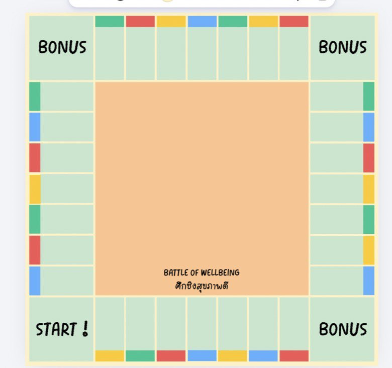
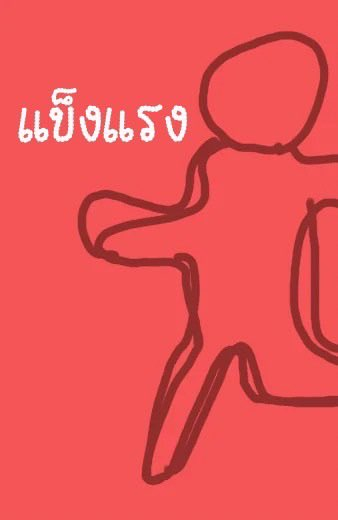
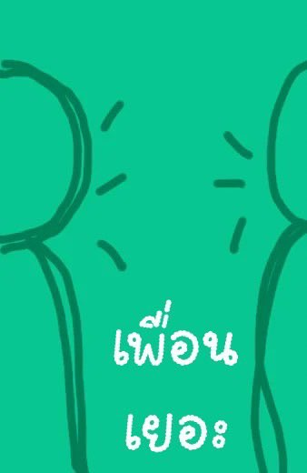
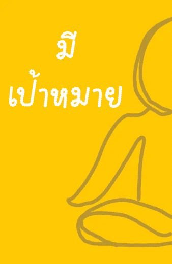
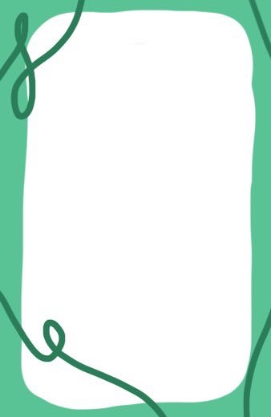

คุณเดินมาตกที่ช่อง BONUS! ได้รับสิทธิ์ทอยลูกเต๋า 4 หน้าพิเศษอีก 1 รอบ ทอยได้เลขอะไร รับโทเคนจากกองกลางไปเลยตามเลขนั้น!
กดปุ่มด้านล่างเพื่อทอยลูกเต๋าโบนัส!
ชื่อภารกิจ | ระดับ 1 = 1 โทเคน | ระดับ 2 = 2 โทเคน | ระดับ 3 = 3 โทเคน | ไม่ทำ = จ่าย 2 โทเคน
1. วางตัวละครตามจำนวนผู้เล่น (3–5 คน) ไว้ที่จุดเริ่มต้น START !
2. แบ่งการ์ดเป็น 4 กองตามสีวางไว้กลางกระดาน: แข็งแรง 10 ใบ (แดง), อารมณ์ดี 10 ใบ (ฟ้า), เพื่อนเยอะ 10 ใบ (เขียว) และ มีเป้าหมาย 10 ใบ (เหลือง)
3. โทเคนรวมตามจำนวนผู้เล่น: 3 คน = 30 โทเคน, 4 คน = 40 โทเคน, 5 คน = 50 โทเคน
4. แจกโทเคนเริ่มต้นจากกองกลางให้ผู้เล่นคนละ 2 โทเคน
1. ผู้เล่นที่มีอายุมากที่สุด เริ่มเล่นเป็นคนแรก
2. คลิกที่แท่นแทรมโพลีนเพื่อทอยลูกเต๋า 4 หน้า (1–4) แล้วเดินตามเลขที่ได้
3. กติกา 3.1 (สีแดง แข็งแรง / สีเขียว เพื่อนเยอะ): อ่านออกเสียงภารกิจให้เพื่อนฟัง แล้วเลือกว่าจะทำหรือไม่
4. กติกา 3.2 (สีฟ้า อารมณ์ดี / สีเหลือง มีเป้าหมาย): เลือกผู้เล่นคนอื่น 1 คนเป็นคนอ่านรายละเอียดในการ์ดให้ฟัง
5. ทำสำเร็จรับ 1–3 โทเคนจากกองกลาง หากไม่ทำต้องจ่ายคืนกองกลาง 2 โทเคน
6. ช่อง BONUS: ทอยลูกเต๋า 4 หน้าอีก 1 รอบ ได้เลขอะไรรับโทเคนตามเลขนั้นทันที!